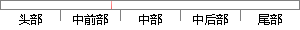

程序所需要的数据是保存在服务器上，更需要我们对数据安全做好保障。
片段位置图

相似结果|
1
原句片段：程序所需要的数据是保存在服务器上，更需要我们对数据安全做好保障。
相似片段 1：一个大网站是如何保障服务器安全的_互联网_IT/...程序增多时,网络资源提升时,网络应用多元化时,都需要...3.做好数据的备份 对企业来说,服务器上的数据是...
|
※ 片段修改建议 ※
近似词参考：- 程序：法式 步伐
- 需要：必要
- 保存：保留 留存 生存
- 需要：必要
- 我们：咱们
- 安全：平安 宁静
系统自动生成语句：法式所必要的数据是保留在服务器上，更必要咱们对数据平安做好保障。
注：本片段修改建议为系统自动生成，仅供参考。